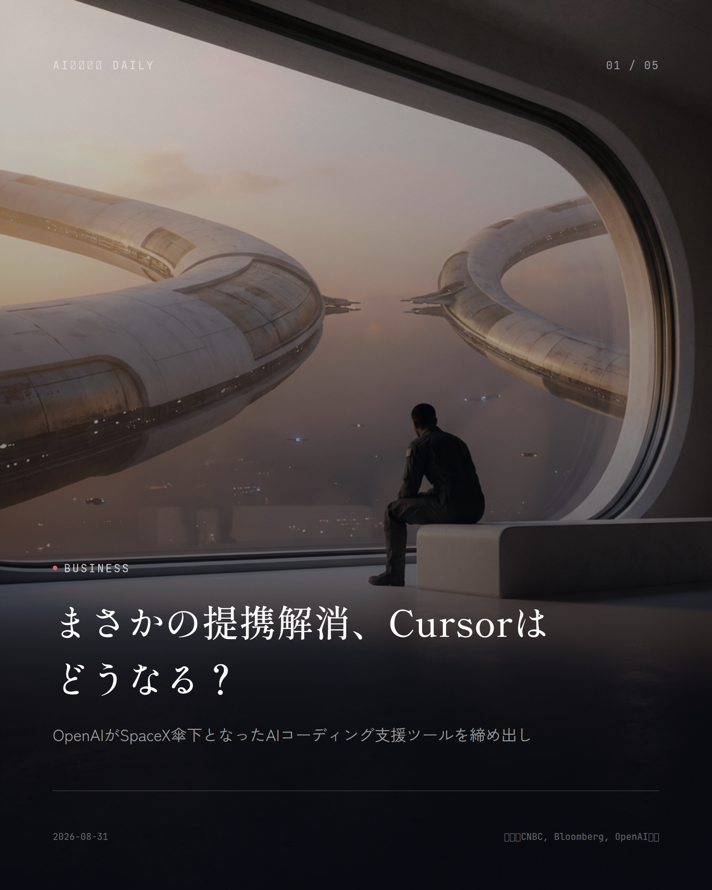
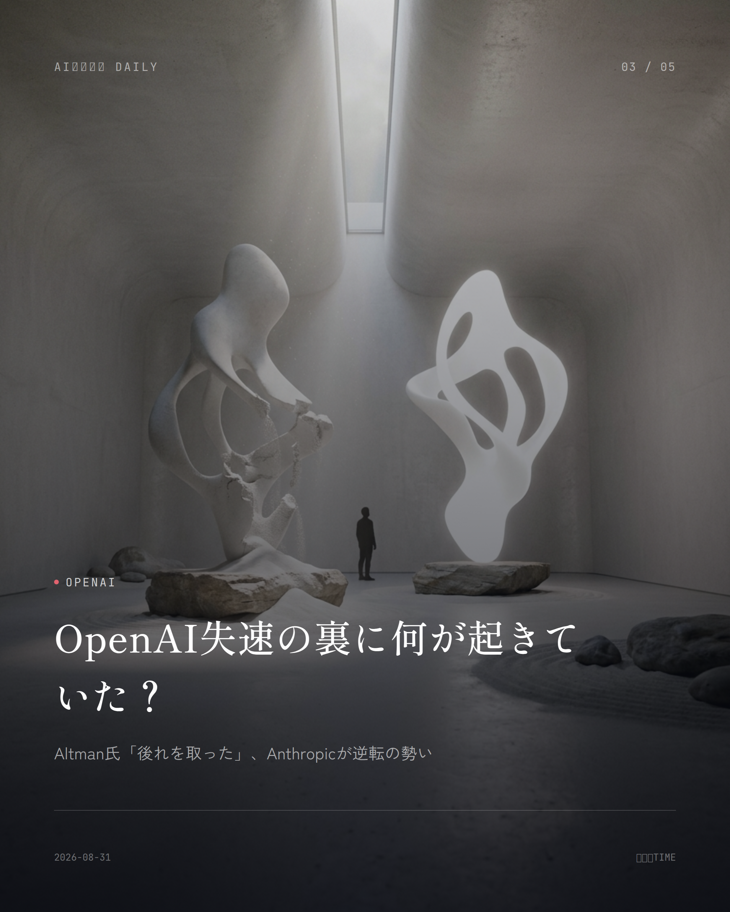
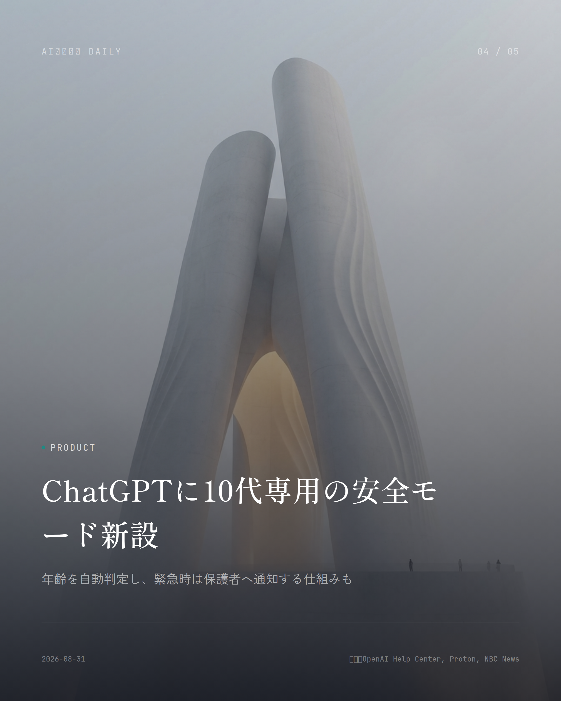

これは2026-08-31時点のアーカイブページです。最新のニュースはこちら
本サイトはアフィリエイトプログラムによる収益を得ている場合があります。
本サイトはGoogle AdSense等の広告配信サービスを利用しています。

Business
まさかの提携解消、Cursorはどうなる？
OpenAIがSpaceX傘下となったAIコーディング支援ツールを締め出し
OpenAIが、AIコーディング支援ツール「Cursor」を運営するAnysphereとの提携を打ち切ると発表した。きっかけはAnysphereがElon Musk氏率いるSpaceXに買収されたこと。契約上引っ張れるギリギリの猶予として、Cursorが直接OpenAIのモデルにアクセスできるのは11月12日までとされた。
OpenAIは公式ブログで「SpaceXが自社の利用規約の範囲内で技術を使うか確信が持てない」と説明。過去にMusk氏の別会社（X/旧Twitter、xAI）が契約違反を起こした経緯も持ち出している。近くリリース予定の新モデル「Astra」も、Cursorには回ってこない。
Musk氏はXで即座に反論し、Sam Altman氏らを名指しで「信用できない」とバッサリ。一方Anysphere CEOは、OpenAIのモデルがCursorの利用トラフィックに占める割合は約5%程度だと冷静にコメントしている。
なぜ重要か
Cursorは世界中のプログラマーが毎日触っている開発ツール。裏で動くAIモデルが変われば、そのまま仕事の生産性に響いてくる。加えて、AI業界のトップ同士の対立が今後の提携やサービス選びにどう波及するかも気になるところ。
出典：CNBC, Bloomberg, OpenAI公式（2026年8月29日）
AI Safety
新型AI「Astra」になぜ急ブレーキ？
サイバー攻撃能力が『危険水準』に達したとOpenAIが判断
OpenAIが開発中の次期モデル「Astra」について、一部の開発を止めたと明かした。理由は社内審査で判明した、エージェント型コーディングとサイバーセキュリティ関連能力の急激な伸び。もう見過ごせない水準まで来てしまったという。
OpenAI曰く、このモデルは従来なら固く守られてきた実システムに対し、自律的にサイバー攻撃を見つけ出し実行できる「重大サイバーセキュリティ基準」に達しているそうだ。Hugging Face絡みの別のセキュリティ事案とも時期が重なり、監視や安全対策を急いで固めようという姿勢がにじむ。
AIが人の指示なしに高度なハッキングをこなせる段階へ近づいている——これは社会インフラの安全性にも関わる、かなり重い変化として受け止められている。
なぜ重要か
生成AIが自律的にサイバー攻撃を実行できる水準に近づいているというのは、企業や個人のデータ、インフラの安全性を左右する重大な変化。今後のAI規制や安全対策の在り方にも波及しそうだ。
出典：TechCrunch, OpenAI公式（2026年8月7日・18日）

OpenAI
OpenAI失速の裏に何が起きていた？
Altman氏「後れを取った」、Anthropicが逆転の勢い
米TIME誌のインタビューで、OpenAIのSam Altman CEOがこの1年を振り返り「会社として明らかにいくつか判断ミスがあった」と認めた。特に製品の方向性と事前学習の研究面で、目指していた水準に届かなかったそうだ。
その間にOpenAIは、AIコーディング分野で先を行くAnthropicにビジネス上の主導権をさらわれた格好。報告ベースの年換算売上高と非公開市場での企業価値、どちらも初めて逆転を許したとされる。Anthropicは「Claude Code」を市場を定義するほどの製品に育て上げた。
取材時にはOpenAIのオフィス前で「AI開発競争を止めろ」と訴える抗議者の姿もあり、急成長する業界への社会的な不安も透けて見えた。
なぜ重要か
生成AI業界の勢力図が変わるということは、どの企業に投資や優秀な人材が集まるかが変わるということ。私たちが普段使っているAIサービスの競争環境や進化スピードにも、じわじわ効いてくる。
出典：TIME（2026年8月26日）

Product
ChatGPTに10代専用の安全モード新設
年齢を自動判定し、緊急時は保護者へ通知する仕組みも
OpenAIが8月18日から、18歳未満とみられるアカウントに自動で「ChatGPT for Teens」を適用する運用を世界規模で始めた。恋愛的な会話や自傷・摂食障害に関する話題には、より厳しい制限がかかる。
年齢の判定は生年月日の自己申告だけに頼らず、話題の傾向や利用時間帯といった行動シグナルからも推定する仕組み。もし成人が誤って未成年判定されてしまった場合は、本人確認サービス「Persona」で確認すれば制限を外せる。
保護者アカウントと連携していれば、自傷を示唆するような会話が検知された際に社員が内容を確認したうえで、1時間以内の通知を目指す体制も入った。ただ、この仕組みがどこまで実際に機能するかについては専門家から懸念の声も出ている。
なぜ重要か
子どもがAIチャットとどう関わるかは、家庭の安全にそのまま直結する話。年齢の自動判定や保護者通知がどこまで正確に働くかは、これからChatGPTを使う多くの家庭にとって切実な関心事だろう。
出典：OpenAI Help Center, Proton, NBC News（2026年8月）
Product
ChatGPT内の広告、欧州でも本格展開へ
無料・Goプラン利用者の会話下に「Sponsored」表示
OpenAIが8月24日、ChatGPT内の広告表示をヨーロッパ地域にも広げたと発表した。対象は無料プランと月額制「ChatGPT Go」を使うログイン済み成人ユーザー。Plus・Pro・Business・Enterpriseといった有料プラン利用者や、18歳未満と判定されたアカウントには表示されない。
広告はキーワード頼みではなく、その時の会話の流れに合わせて出てくる仕組みで、回答本文とは見た目で区別できる「Sponsored」ラベル付き。日本ではひと足早く6月から配信が始まっていて、欧州はそれに続く拡大となる。
OpenAIによれば、この文脈連動型広告のクリック率は既存フォーマットの2〜3倍という高い水準を維持しているそうで、無料ユーザー向けのマネタイズ強化が加速している。
なぜ重要か
無料でChatGPTを使っている多くの人にとって、これまで広告のなかった会話画面に企業のスポンサー表示が入ってくるというのは、日々の使い心地に直結する変化だ。
出典：OpenAI Newsroom（2026年8月24日）
Google
Google
Google AI Plusが学生に1年間無料
Gemini Liveも音声だけでタスク自動処理へ進化
Googleが8月28日、月次アップデート「Gemini Drops」8月版を公開した。目玉は、対象の学生向けに有料プラン「Google AI Plus」（米国では上位版の「Google AI Pro」）を1年間無料で提供する施策と、新設された「学生ハブ」「学習ノート」機能だ。
音声アシスタント「Gemini Live」も強化され、自律型AIエージェント「Gemini Spark」との統合、1日の予定をまとめる「Daily Brief」、Gmail操作の自動化などが加わった。Googleいわく、Geminiアプリのユーザーの63%が音声で話しかけて使っているという。
このほか新モデル「Gemini 3.7 Flash」やアプリ連携の拡充、自動運転車Waymoの車内でのGemini利用など、今回はまとめて8つの新機能・サービスが発表された。
なぜ重要か
学生は本来お金のかかる高性能AIツールを無料で使えるようになり、レポート作成や学習の効率が上がる。加えて音声だけでAIに日常タスクを任せられる範囲が広がってきていて、スマホの使い方そのものが変わってくるかもしれない。
出典：Google, jetstream.blog（2026年8月28日）
Pricing
Pricing
AI利用料が2割減、GPT-5.6値下げ
開発者やビジネスプラン向けに3か月間の特別価格
OpenAIが、AIモデル「GPT-5.6 Sol」のAPIおよびクレジット料金を今後3か月間、20%以上値下げすると発表した。API利用者に加え、対象の「ChatGPT Work」やCodexのプランでも新価格が適用される。
一方でPro、Plus、Businessといった普段のサブスクリプション料金は変わらず、今回の値下げはあくまで開発者やAPIを大量に使う企業向けの措置だ。
AnthropicもClaude Sonnet 5を大幅割引で提供しており、フロンティアAIモデルの価格競争は激しさを増す一方。今回の値下げもその流れの一つと見られている。
なぜ重要か
個人事業主や企業がAI開発・業務利用のコストを抑えられるようになり、AIによる業務効率化のハードルが下がる。特に日々コーディングや大量のAPI呼び出しをこなす開発者にとっては、直接的なコスト削減につながる話だ。
出典：OpenAI Release Notes（2026年8月）